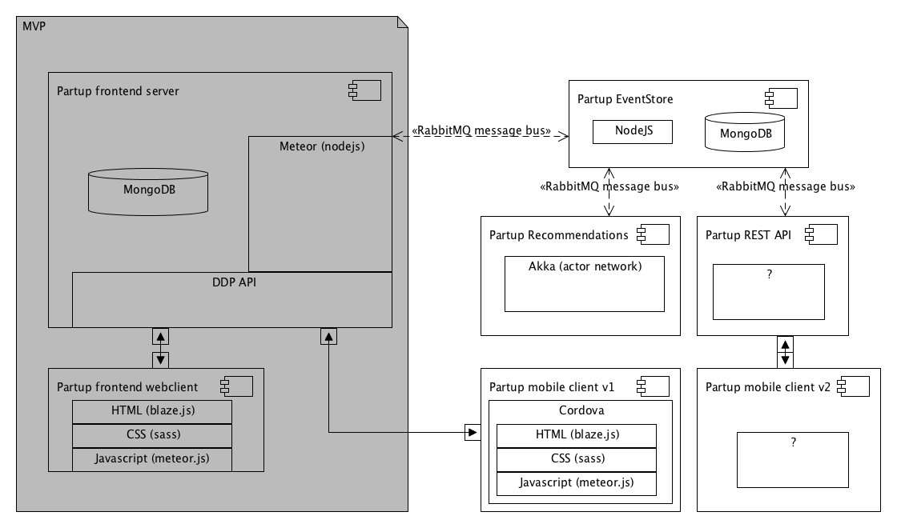
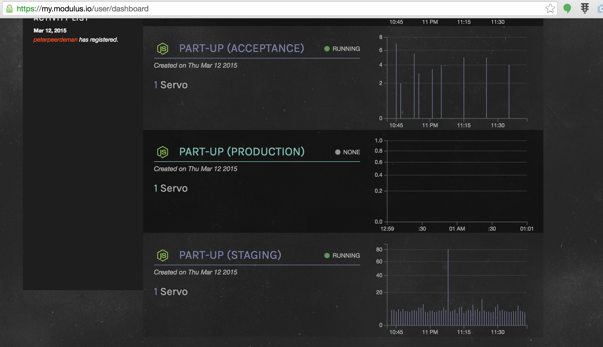
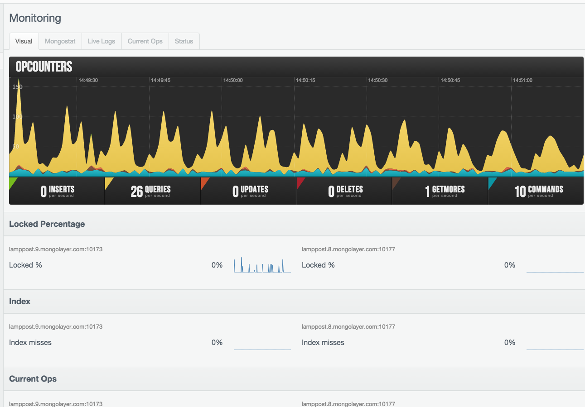
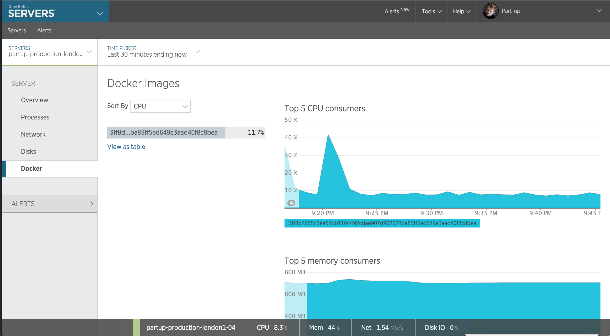
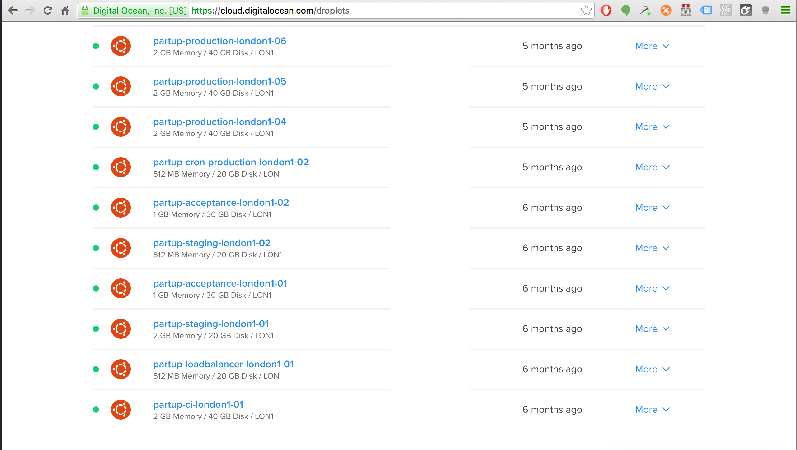

Challenges and Solutions
for Meteor in Production

Part-up Premises
- Super quick launch (4 months)
- Emphasis on realtime collaboration
- Easy onboarding for developers
Choosing Meteor
the good
- Reactive data model (ddp)
- "All inclusive" development environment
- Single language codebase
Choosing Meteor
the scary
- Framework maturity
- Clients risk tolerance
- DDP (vs REST)
Challenges
Challenge 1
Teamwork
Tutorials say:
"put everything in one file!"
file structure (blaze)
.. (up a dir)
/Users/peter/development/partup/
▾ app/
▸ client/
▸ i18n/
▸ lib/moment-locales/
▾ packages/
▸ partup:client-admin-createswarm/
▸ partup:client-admin-createtribe/
▸ partup:client-admin-featured-networks/
▸ partup:client-admin-featured-partups/
▸ partup:client-admin/
▸ partup:client-autocomplete/
▸ partup:client-base/
▸ partup:client-column-tiles-layout/
▸ partup:client-comments/
▸ partup:client-contribution/
▸ partup:client-copy-to-clipboard/
▸ partup:client-dropbox-chooser/
▸ partup:client-dropdown/
▸ partup:client-dropdowns/
▸ partup:client-focuspoint/
▸ partup:client-footer/
▸ partup:client-forminputs/
▸ partup:client-gallery/
▸ partup:client-header/
▸ partup:client-hover-container/
▸ partup:client-invite-to-activity/
▸ partup:client-invite-to-network/
▸ partup:client-invite-to-partup/
▸ partup:client-loader/
▸ partup:client-login/
▸ partup:client-network-settings-bulkinvite/
▸ partup:client-network-settings-requests/
▸ partup:client-network-settings-uppers/
▸ partup:client-network-settings/
▸ partup:client-network-tile/
▸ partup:client-pages/
▸ partup:client-partupsettings/
▸ partup:client-popup/
▸ partup:client-profilesettings/
▸ partup:client-prompt/
▸ partup:client-rating/
▸ partup:client-ratings/
▸ partup:client-resetpassword/
▸ partup:client-selectors/
▸ partup:client-spinner/
▸ partup:client-update/
▸ partup:client-upper-tile/
▸ partup:iconfont-generator/
▸ partup:lib/
▸ partup:meteor-bender/
▸ partup:newrelic/
▸ partup:server/
▸ reywood:publish-composite/
▾ private/
▸ public/
▸ tests/
▸ uploads/
iconfont.json
package.json
scss.json
▸ config/
▸ devops/
▸ styleguide/
analyze_ddp*
CHANGELOG.md
ci.sh*
CONTRIBUTING.md
docker-compose.yml
Dockerfile
export-translations.sh*
LICENSE
License supplement
README.md
RELEASING.MD
start*
Component structure (blaze)
▾ partup:client-activity/
▾ i18n/
en.i18n.json
nl.i18n.json
▾ templates/
ActivityForm.html
ActivityForm.js
ActivityFormPlaceholders.js
ActivityView.html
ActivityView.js
Activity.html
Activity.js
package-tap.i18n
package.js
Activity.html
{{# if showForm }}
{{> ActivityForm
activity=activity
edit=edit
CREATE=CREATE
POPUP=POPUP
CREATE_PARTUP=CREATE_PARTUP
createCallback=createCallback
}}
{{ else }}
{{> ActivityView
activity=activity
contribution_id=contribution_id
edit=edit
COMMENTS_LINK=COMMENTS_LINK
CONTRIBUTIONS=CONTRIBUTIONS
EXPANDED=EXPANDED
READONLY=READONLY
CREATE_PARTUP=CREATE_PARTUP
UPDATE_LINK=UPDATE_LINK
isUpper=isUpper
}}
{{/ if }}
Activity.js
/**
* Widget to render a single activity
*
* You can pass the widget a few options which enable various functionalities
*
* @param {Object} activity The activity to render
* @param {Function} createCallback A function which is executed after a new activity has been added
* @param {String} contribution_id Contribution id to render, if only one should be rendered
* @param {Boolean} COMMENTS_LINK Whether the widget should display the link to comments
* ...
*/
// snip
/*************************************************************/
/* Widget helpers */
/*************************************************************/
Template.Activity.helpers({
showForm: function() {
return !this.READONLY && (!!this.CREATE || Template.instance().edit.get());
}
});
// snip
component usage
{{# each activities }}
{{> Activity activity=. CONTRIBUTIONS=true COMMENTS_LINK=true }}
{{/ each }}
{{# each archivedActivities }}
{{> Activity activity=. CONTRIBUTIONS=true }}
{{/ each }}
file structure (react)
.. (up a dir)
/Users/peter/development/sdrealtime/
▾ app/
▾ client/
▸ classes/
▾ components/
▸ fieldsets/
▸ layouts/
▸ modals/
▸ views/
AppNavbar.jsx
AppSidepanel.jsx
AppTitle.jsx
AppUser.jsx
Article.jsx
ArticleList.jsx
ArticleTile.jsx
CaptureEnterTextarea.jsx
Chatbox.jsx
Checkbox.jsx
Comment.jsx
CommentList.jsx
FilesTable.jsx
GalleryTile.jsx
GlobalModals.jsx
GroupList.jsx
GroupTile.jsx
LoadMoreButton.jsx
Message.jsx
Message.jsx.orig
NavItem.jsx
NavItemSub.jsx
Notification.jsx
Page.jsx
PageHeader.jsx
PictureTile.jsx
Profile.jsx
ProgressBar.jsx
Restricted.jsx
Spinner.jsx
Summernote.jsx
TimelineEntry.jsx
Uploader.jsx
UserTile.jsx
▸ config/
▸ containers/
▸ helpers/
▸ lib/
▸ states/
▸ stores/
▸ stylesheets/
main.html
postcss.json
router.jsx
▸ lib/
▸ packages/npm-container/
▸ public/
▾ server/
▸ classes/
▸ config/
▸ events/
▸ fileclasses/
▸ fixtures/
▸ helpers/
▸ lib/
▸ methods/
▸ publications/
▸ rest/
▾ services/
emailService.js
eventService.js
notificationService.js
init.jsx
ldap.js
rest-middleware.jsx
packages.json
▸ resources/Inspinia/
CONTRIBUTING.md
README.md
USER_RIGHTS.md
Challenge 2
Code Reuse
Lib package
▾ partup:lib/
▸ collections/
▸ helpers/
▸ private/
▸ schemas/
▸ services/
▸ startup/
▸ transformers/
error.js
namespace.js
package.js
namespace.js
/**
@namespace Partup
@name partup
*/
Partup = {};
/**
@namespace Helpers
@name partup.helpers
*/
Partup.helpers = {};
/**
@namespace Schemas
@name partup.schemas
*/
Partup.schemas = {
/**
@namespace schema.forms namespace
@name partup.schemas.forms
*/
forms: {},
/**
@namespace schema.entities namespace
@name partup.schemas.entities
*/
entities: {}
};
// snip
tags.js
/**
@namespace Tags helper service
@name Partup.services.tags
@memberOf partup.services
*/
Partup.services.tags = {
/**
* Transform a comma separated string into an array of tags
*
* @memberOf services.tags
* @param {String} tags_input
*/
tagInputToArray: function(tags_input) {
if (!tags_input) return [];
var _tags = tags_input.split(',');
if (_tags.length === 0) return [];
return _tags.map(function(elem) {
return elem.trim();
}).filter(function(elem) {
return !!elem;
});
},
// snip
}
ES2015 modules (meteor 1.3)
/**
* Extract mentions from a message
*
* e.g. "Hello [user:9ZxF5SHPjcAfbey4j|Jesse de Vries] & [user:EpWPsBoBexD9QFSMR|Nick Koster]"
*/
export function extract(message) {
var mentions = [];
// extracts user (single) mentions
extractUsers(message).forEach(function(mention) {
var existingMention = lodash.find(mentions, {_id: mention._id});
if (!existingMention) mentions.push(mention);
});
//snip
return mentions;
};
ES2015 modules (meteor 1.3)
import extract from './helpers/mentions/extract';
Template.InviteToActivity.helpers({
extractedMentions: function() {
return extract(Template.instance().message.get());
},
// snip
});
Challenge 3
Too reactive
Timeline
wrap in nonreactive
// somewhere in updates.js
updateView: function() {
Tracker.nonreactive(function() {
var updates = tpl.updates.model.fetch();
tpl.updates.view.set(updates);
tpl.updates.refreshDate.set(new Date());
Partup.client.updates.resetUpdatesCausedByCurrentuser();
});
},
Challenge 4
Microservice integration
"How do we decouple meteor app logic into separate microservices?"
Architecture
Publish subscribe bus with EventEmmitter2
activities_methods.js
Meteor.methods({
/**
* Archive an Activity
*
* @param {string} activityId
*/
'activities.archive': function(activityId) {
var upper = Meteor.user();
var activity = Activities.findOneOrFail(activityId);
if (!upper || activity.creator_id !== upper._id) {
throw new Meteor.Error(401, 'Unauthorized.');
}
try {
Activities.update(activityId, {$set: {archived: true}});
Event.emit('partups.activities.archived', upper._id, activity);
return {
_id: activity._id
};
} catch (error) {
Log.error(error);
throw new Meteor.Error(500, 'Activity [' + activityId + '] could not be archived.');
}
}
});
activities_handler.js
/**
* Generate a Partup update when an activity is archived
*/
Event.on('partups.activities.archived', function(userId, activity) {
if (!userId) return;
if (!activity.update_id) return;
var set = {
upper_id: userId,
type: 'partups_activities_archived',
updated_at: new Date()
};
Updates.update({_id: activity.update_id}, {$set: set});
});
example
- User joins a partup in meteor app
- Event is sent from Meteor app to bus
- Recommendation service reacts on event
- Recommendation service generates recommendations and sends event
- Meteor reacts on recommendation event and pushes data to client
Challenge 5
Scaling Meteor
Modulus.io
Compose.io
so we moved the appserver to europe
so we created our own scaled cloud
Docker & DigitalOcean
Docker & DigitalOcean
and everything was ok...
for a while
cpu spikes because of enormous reactivity
we cached it with REST
// Disable all default response headers (we want to control them manually)
JsonRoutes.setResponseHeaders({});
// Enable caching for a couple of different endpoints
JsonRoutes.Middleware.use(function(request, response, next) {
var urlRegexesToCache = [
/\/networks\/[a-zA-Z0-9-]+$/, // /networks/lifely-open
/\/networks\/featured\/[a-zA-Z]+$/, // /networks/featured/en
/\/partups\/by_ids\/[a-zA-Z0-9,]+$/, // /partups/by_ids/vGaxNojSerdizDPjb
/\/partups\/discover??((?!userId).)*$/, // /partups/discover?query (only if userId is not present)
/\/partups\/discover\/count??((?!userId).)*$/, // /partups/discover/count?query (only if userId is not present)
/\/partups\/home\/[a-zA-Z]+$/, // /partups/home/en
/\/partups\/featured_one_random\/[a-zA-Z]+$/, // /partups/featured_one_random/en
/\/users\/count$/, // /users/count
];
var shouldCache = false;
urlRegexesToCache.forEach(function(regex) {
if (regex.test(request.url)) shouldCache = true;
});
response.setHeader('Cache-Control', shouldCache ? 'public, max-age=3600' : 'no-store, max-age=0');
next();
});
Meteor Learnings
- Building functionality is fast
- Javascript only is a bliss
- Meteor reactivity can be a pain
- DDP isn't cacheable: use it wisely
- React components fit really well
Would we do it again?
yes
Thank you for your attention
Challenges and Solutions
for Meteor in Production